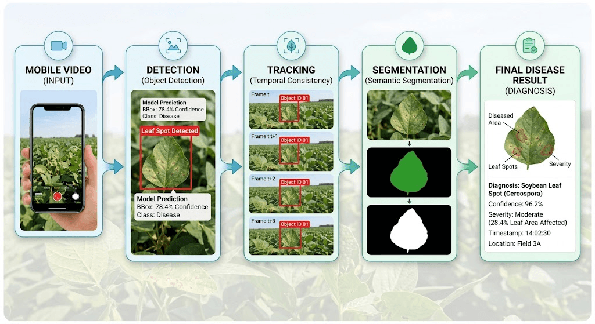

Video and Multi-View Plant Disease Analysis
Relying on a single photo can be risky in outdoor conditions. A temporary shadow, wind blur, or sunlight glare can make an otherwise healthy leaf look diseased, or cause the model to miss subtle symptoms.
A video records multiple frames from slightly different angles as the user moves around the plant. Combining observations across several frames makes the final diagnosis much more reliable [5].
Key Steps in Video-Based Monitoring
- Frame extraction: Instead of analyzing every single frame at 30 or 60 FPS, the system extracts keyframes, discarding blurred or repetitive frames.
- Tracking leaves with DeepSORT: When a phone or drone moves across a plant, the same leaf appears in many frames. Without tracking, the system would count that leaf repeatedly. DeepSORT combines a Kalman filter (predicting position) and deep appearance features (leaf re-identification) to assign a consistent ID to each leaf [5].
- Combining predictions: By grouping predictions for the same leaf across multiple frames, the system can use consensus methods (like majority voting) to produce a confident final result.
Pipeline Overview
Video → Frame Extraction → YOLO Leaf Detection → DeepSORT Tracking → Best View Selection → Segmentation → Consensus Diagnosis [5].

Single-Image vs. Video Analysis
| Feature | Single-Image Analysis | Video & Multi-View |
|---|---|---|
| Reliability | Can fail due to single-frame blur or glare | More reliable; combines results from multiple frames |
| Occlusion | Hidden symptoms stay hidden | Camera movement reveals different angles |
| Leaf Tracking | No tracking across time | DeepSORT assigns unique leaf IDs |
| Computation | Low (one-time inference) | Higher (processes multiple frames) |
Algorithm 2: Multi-Frame Majority Voting
A simple and effective way to combine predictions across video frames is majority voting. When a tracked leaf is seen across several frames, the model predicts a label for each frame. The final diagnosis is simply the label that appears most often.
# Multi-Frame Majority Voting Algorithm
# Input: List of predictions across 10 video frames for a single tracked leaf
from collections import Counter
# Simulated 10 frame predictions for a tracked leaf:
frame_predictions = [
"Leaf Spot",
"Leaf Spot",
"Healthy", # Frame affected by sunlight glare
"Leaf Spot",
"Leaf Spot",
"Healthy", # Frame blurred by wind motion
"Leaf Spot",
"Leaf Spot",
"Leaf Spot",
"Healthy" # Frame taken at a steep angle
]
# Count the frequency of each predicted label
vote_counts = Counter(frame_predictions)
# Select the label with the highest vote count
final_prediction = vote_counts.most_common(1)[0][0]
print("Frame predictions:", frame_predictions)
print("Vote counts:", dict(vote_counts))
print("Final prediction:", final_prediction)Inputs & Outputs
Input: 10 sequential frame predictions with 3 noisy frames.
Output: Vote counts: {'Leaf Spot': 7, 'Healthy': 3} → Final prediction: Leaf Spot
Practical Value
Noisy frames caused by glare or blur are outvoted by the majority, preventing false diagnoses.
How It Works
- Extract frames for a tracked leaf.
- Run the disease model on each frame.
- Tally how many times each class was predicted.
- Select the disease class with the most votes.
Module Narration
A 1–2 minute audio discussion of frame processing, DeepSORT tracking, and multi-frame majority voting.